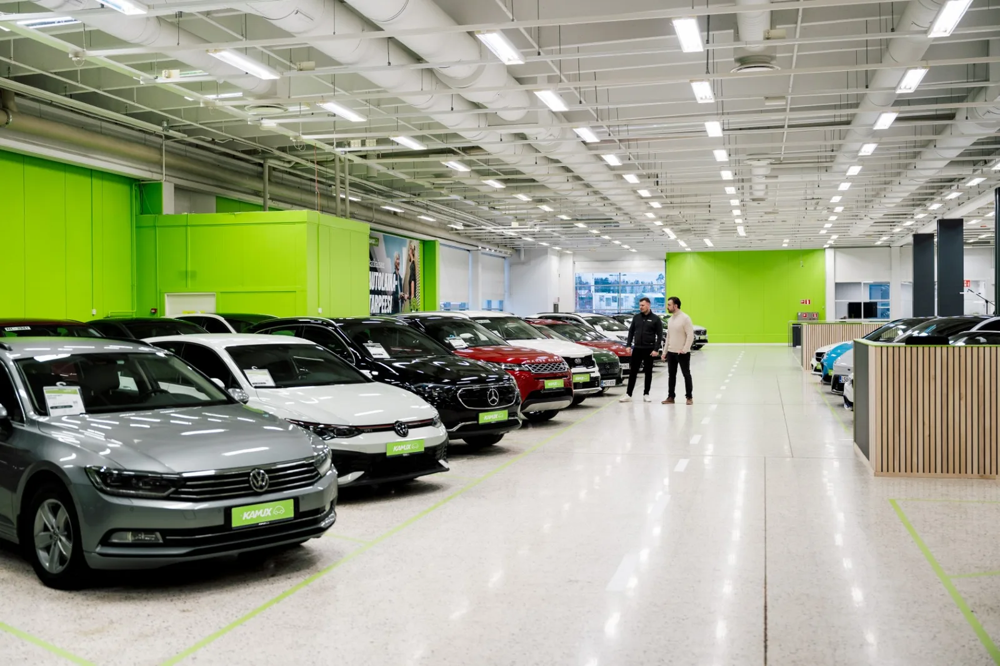

▲ 전시장에 붙은 가격표가 곧 최종 지불 금액을 뜻하지는 않는다 ⓒ Wikimedia Commons (CC BY-SA 4.0)
계약서에 도장을 찍기 직전, 딜러가 슬쩍 말을 건넨다. "사장님이니까 몇 십만 원 더 빼드릴게요." 이 말을 듣는 순간 대부분의 소비자는 두 가지 감정을 동시에 느낀다. 방금 좋은 조건을 받은 것 같은 안도감, 그리고 애초에 이 차가 얼마짜리였는지 모르겠다는 불안감.
카프리즘은 딜러에게 직접 견적을 요청해 실측하는 방식 대신, 공개된 2차 자료를 종합하는 방식으로 이 질문에 접근했다. 보배드림·클리앙 등 자동차 커뮤니티에 쌓인 실구매 후기, 신차 영업 경력자들이 남긴 업계 구조 설명, 컨슈머인사이트 등 소비자 조사기관의 자료, 언론에 보도된 딜러 유통 구조 기사를 종합하면, 협상 여지가 실제로 어디에 몰려 있는지 어느 정도 윤곽이 그려진다.
1. 딜러 마진은 어디서 나오나 — 제조사 인센티브·프로모션·딜러 재량 할인
딜러가 손님에게 "깎아준다"고 말하는 돈은 딜러 본인 지갑에서 나오는 게 아니다. 정확히는 딜러(또는 영업사원)에게 돌아오는 여러 겹의 보상 구조 중 일부를 고객에게 돌려주는 것에 가깝다. 자동차 영업 경력자들이 커뮤니티에 남긴 설명을 종합하면, 이 구조는 대략 세 층으로 나뉜다.
| 구분 | 누가 정하나 | 협상 가능성 |
|---|---|---|
| 제조사 프로모션 | 완성차 회사가 전국 공통으로 공시 — 현금 할인, 저리 할부, 특정 트림 무이자 등 | 공지된 조건이라 협상 여지가 거의 없음. 다만 중복 적용 가능 여부는 딜러가 안내 |
| 영업사원 판매수당 | 완성차 회사·딜러사가 내부 기준으로 지급 — 국산차는 대당 출고가의 4~6% 수준으로 알려짐 | 이 수당의 일부를 현금 할인이나 서비스로 돌려주는 것이 협상의 핵심 재원 |
| 딜러(대리점) 자체 프로모션 | 개별 대리점·지점이 재고·실적 목표에 따라 자율적으로 결정 | 가장 협상 여지가 큰 영역 — 지역·시기·재고 상황별 편차가 크다고 보도됨 |
📍 국산차와 수입차는 구조 자체가 다르다
보배드림에 공유된 현직·전직 영업 경력자들의 설명을 종합하면, 국산차 영업사원은 신입 초기 일정 기간을 제외하면 기본급 없이 순수 수당제로 운영되는 경우가 많고, 손님에게 제공하는 블랙박스·틴팅·현금 할인 등의 서비스를 영업사원이 자기 수당에서 부담하는 구조로 알려져 있다. 반면 수입차 딜러사는 기본급과 4대보험을 갖춘 경우가 많은데, 흥미롭게도 대당 판매수당 자체의 비율은 국산차보다 낮다는 증언도 있다. 한 현직 수입차 딜러가 남긴 글에서는 "차량 공급가액의 1~1.5% 정도가 수당"이라고 밝히며, 이 중 상당 부분을 고객 할인으로 돌리고 나면 실제 손에 남는 몫은 크게 줄어든다고 언급했다. 즉 "같은 말을 해도 실제로 깎을 수 있는 폭"은 브랜드와 딜러사 형태에 따라 처음부터 다르며, 수당 비율만 놓고 보면 오히려 국산차가 더 크고 수입차가 더 작은 경우도 있다는 뜻이다.
2. 실제 협상 여지가 있는 항목 — 현금가, 할부, 액세서리, 탁송료
협상 여지가 "있다"와 "체감상 크다"는 다른 이야기다. 커뮤니티에 공유된 사례들을 종합해보면, 항목별로 협상 가능성의 크기가 꽤 다르게 나타난다.
✅ 항목별 협상 여지 — 커뮤니티 후기·업계 설명 종합
· 현금가 — 통상 언급되는 폭은 차량가의 2~3% 수준. 인기 모델은 폭이 좁고, 재고가 쌓인 모델은 넓어지는 경향
· 할부 vs 현금 결제 — 할부를 유도하는 조건일수록 딜러 쪽에 별도 수수료가 발생하는 구조여서, 현금 결제 의사를 밝히면 오히려 서비스 항목에서 손해를 볼 수 있다는 지적도 있음 — 두 조건의 총액을 각각 계산해 비교할 것
· 액세서리·서비스(블랙박스, 틴팅, 매트, 하이패스 등) — 체감 협상 폭이 가장 크게 느껴지는 영역. 원가가 현금 할인보다 낮아 딜러가 상대적으로 쉽게 내줄 수 있는 카드로 꼽힘
· 탁송료·등록대행수수료 — 지역·딜러에 따라 면제되거나 할인되는 경우가 있어 견적서에 별도 항목으로 명시해달라고 요구하는 것이 좋다는 후기가 많음
▲ 동네의 소규모 딜러라도 재고 상황과 목표 실적에 따라 협상 여지가 크게 달라질 수 있다 ⓒ Wikimedia Commons (CC BY-SA 4.0)
실제 딜러 할인 관행과 유통 구조 변화에 대한 보도는 아래에서 확인할 수 있다. '직접판매' 수입차 화두 기사 바로가기
3. 시기별 협상력 차이 — 월말·분기말·연식변경 재고
같은 딜러, 같은 차라도 언제 찾아가느냐에 따라 이야기가 달라진다. 딜러(영업사원)에게는 개인·지점 단위의 판매 목표가 있고, 이 목표를 채우기 위한 압박이 커지는 시점이 곧 소비자에게는 협상력이 커지는 시점이다.
| 시점 | 이유로 언급되는 내용 |
|---|---|
| 월말 | 개인·지점의 월간 판매 목표 달성 여부가 갈리는 시점 — 목표 근접 시 추가 할인·서비스 제공 여력 커짐 |
| 분기말(3·6·9·12월) | 제조사·딜러사 차원의 분기 목표 마감 — 프로모션이 겹쳐 조건이 가장 좋다고 언급되는 시기 |
| 연식변경·부분변경 임박 재고차 | 신모델 출시 전 재고 소진이 필요해 할인폭이 커지는 경향 — 다만 신차 등록일 기준 연식이 불리해질 수 있어 보증·잔존가치 영향은 별도 확인 필요 |
| 인기 모델 vs 재고 누적 모델 | 대기 물량이 긴 인기 모델은 협상 폭이 거의 없고, 재고가 쌓인 트림·색상일수록 폭이 커진다는 설명이 일관되게 나옴 |
▲ 재고가 쌓인 차량일수록, 그리고 월말·분기말에 가까울수록 판매자 쪽의 할인 여력이 커지는 경향이 있다고 알려져 있다 ⓒ Unsplash
📍 컨슈머인사이트 조사가 시사하는 것
컨슈머인사이트의 연례 자동차 기획조사에서 판매 서비스 만족도(SSI)는 전시장 응대, 영업사원, 인수 과정, 사후관리 등을 종합해 산출된다. 이 조사에서 브랜드 간 점수 차이가 꾸준히 벌어진다는 사실은, 같은 값을 치르고도 딜러·지점에 따라 경험의 질이 크게 다를 수 있다는 점을 뒷받침한다. 가격만이 아니라 서비스 응대까지 비교 대상에 넣어야 하는 이유다.
4. 협상 시 유의사항 — 트레이드인 저평가와 흔한 실수
협상에서 손해를 보는 경우 대부분은 '얼마를 깎았는가'가 아니라 '무엇을 놓쳤는가'에서 갈린다. 업계 관계자들과 커뮤니티 후기에서 반복적으로 언급되는 실수 패턴은 다음과 같다.
⚠️ 협상에서 흔히 놓치는 부분
· 중고차 트레이드인을 너무 일찍 밝히는 것 — 신차 가격 협상이 끝나기 전에 트레이드인 여부를 알리면, 딜러가 신차 할인과 중고차 매입가를 뭉쳐서 계산해 실제로는 트레이드인 쪽에서 손해를 보게 되는 경우가 있다는 지적이 반복됨. 신차 가격을 먼저 확정하고 트레이드인은 마지막에 별도로 협상하는 순서가 유리하다고 알려져 있음
· 할부 조건을 가격과 분리해 보지 않는 것 — 월 납입금만 보고 총 지불액을 확인하지 않으면 수수료·이자가 할인분을 상쇄할 수 있음
· 구두 약속만 믿는 것 — 서비스 항목·탁송료 면제 등 구두로 약속된 조건은 계약서·견적서에 명시해두지 않으면 인수 시점에 달라질 수 있음
· 한 곳에서만 견적을 받는 것 — 같은 브랜드라도 지점·대리점·개인 딜러에 따라 조건이 달라, 비교 대상이 없으면 협상력 자체가 생기지 않음
▲ 구두로 약속받은 조건은 계약서·견적서에 명시되지 않으면 인수 시점에 달라질 수 있다 ⓒ Wikimedia Commons (CC BY 2.0)
5. 커뮤니티 후기로 보는 실제 사례 패턴
보배드림·클리앙 등에 공유된 실구매 후기를 개별 사례가 아니라 패턴으로 묶어보면 몇 가지 공통된 흐름이 보인다. 카프리즘이 직접 여러 딜러에게 견적을 받아 비교한 결과가 아니라, 공개된 후기들에서 반복적으로 등장하는 경향을 정리한 것이다.
📍 커뮤니티에 공유된 사례에 따르면
· 같은 차종이라도 지점·대리점 간 격차가 크다는 후기가 압도적으로 많다. 특히 대리점(딜러 개인 운영)이 지점(직영)보다 재량 폭이 넓다는 경험담이 자주 등장함
· "먼저 조건을 부르지 말고 딜러가 제시하게 한 뒤 다른 견적과 비교했다"는 방식의 후기가 반복적으로 확인됨
· 영업사원 개인의 실적 상황(월말 목표 근접, 신입 초기 실적 확보 등)이 가격보다 서비스 항목에서 먼저 드러난다는 경험담이 많음
· 전직·현직 영업 경력자가 남긴 글에서는 "고객이 여러 곳을 비교하고 있다는 사실을 아는 것 자체가 협상력"이라는 취지의 설명이 공통적으로 나타남
자동차 영업 구조와 딜러 수당에 대한 현직·전직 경력자들의 설명은 아래에서 확인할 수 있다. 보배드림 딜러수당 설명 글 바로가기
6. 요약
딜러가 제시하는 할인은 딜러 개인의 선의가 아니라, 판매수당·장려금이라는 재원의 일부를 돌려주는 구조다. 제조사 공시 프로모션은 협상 여지가 거의 없지만, 영업사원 수당과 딜러(대리점) 자체 재량 할인은 시기와 재고 상황에 따라 폭이 크게 달라진다.
커뮤니티에 공유된 실구매 후기와 업계 자료를 종합하면, 현금가 협상 폭은 통상 차량가의 2~3% 수준으로 언급되지만, 액세서리·탁송료 같은 부가 서비스에서 체감 차이가 더 크게 나타난다. 월말·분기말·연식변경 임박 재고차 시점에 협상력이 커지는 경향도 반복적으로 확인된다.
가장 흔한 실수는 중고차 트레이드인을 너무 일찍 밝히는 것과, 구두 약속을 문서로 남기지 않는 것이다. 여러 딜러에게서 조건을 받아 비교하는 것이 여전히 가장 검증된 협상 전략으로 꼽힌다.